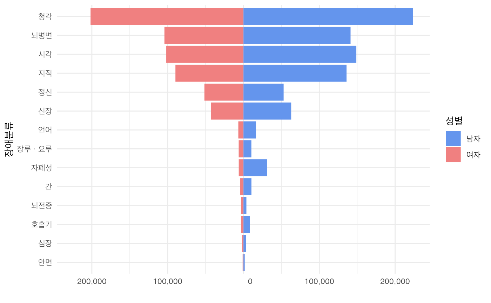

보건복지부 장애인정책국 장애인정책과에서 제공하는 등록장애인 현황파악을 통한 효율적 정책수립 및 지원, pwd는 pwrson with difficulty 또는 person with disability의 약자이다.
양식
A data frame with 4 variables:
- 성별
해당 시점, 장애분류의 성별
- 시점
해당 장애인현황 조사 시점
- 장애분류
장애분류 : 합계,시각,청각,언어,지적,뇌병변,자폐성,정신,신장,심장,호흡기,간,안면,장루ㆍ요루,뇌전증,
- 인구수
해당 시점, 성별, 장애분류의 인구수:장애인등록인구를 기준으로 하고 등록 외국인을 포함
예시 코드
male_2022 <- pwd %>%
filter(시점 == 2022 & 성별 == "남자" & 장애분류 != "합계")
female_2022 <- pwd %>%
filter(시점 == 2022 & 성별 == "여자" & 장애분류 != "합계")
pwd_2022 <- rbind(male_2022,female_2022) %>%
arrange(인구수)
pwd_2022$장애분류<- factor(pwd_2022$장애분류, levels = unique(pwd_2022$장애분류))
pp <- ggplot(data=pwd_2022, mapping = aes(x=`장애분류`, fill = `성별`, y = ifelse(test= `성별` == "여자", yes = (-1) *`인구수`, no = `인구수`))) +
geom_bar(stat="identity") +
theme_minimal(base_family = "AppleSDGothicNeo-SemiBold") +
labs(y="")+
scale_y_continuous(labels = function(x) format(abs(x), big.mark = ",", scientific = FALSE), limits = max(pwd_2022$인구수) *c(-1,1)) +
coord_flip() +
scale_fill_manual(values = c("여자" = "lightcoral", "남자" = "cornflowerblue"), labels = c("남자", "여자"))
pp
